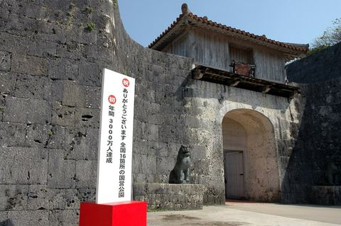
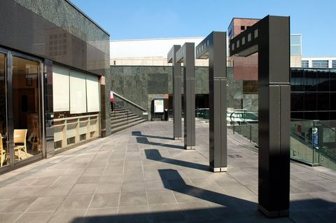
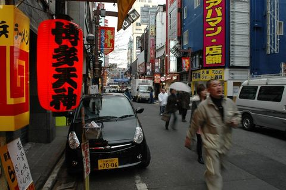

日本·京都 · 2015.03.20 – 2015.03.22
京都的水水花香灯茶饭
94 张照片 →
日本 · 2009.11.10 – 2009.11.18
在日本的半个月
24 张照片 →
日本·冲绳 · 2008.03.20 – 2008.03.22
视觉疲劳的冲绳：不感觉陌生的新地方
去冲绳早有计划，而什么时候出发是仓促决定的。缘起一个媒体的朋友要做冲绳的专题，请我帮忙统筹运作一些事情，真高兴我还有被利用的价值，因为签证原因阴差阳错我成了不得不一起去的人了。 出发前简单地作了些功课，一个亚热带的过中国春节的日本小岛，飞台…
23 张照片 →
日本·北海道 · 2007.04.18 – 2007.04.20
首航北海道：没有色彩的季节北海道一样有味道
32 张照片 →
日本·关西 · 2006.08.26 – 2006.08.28
关西细节：只有在细微中才能感受日本传统美
15 张照片 →
日本·东京 · 2006.03.03 – 2006.03.05